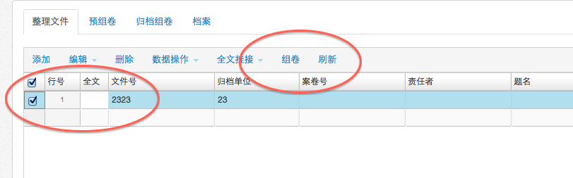
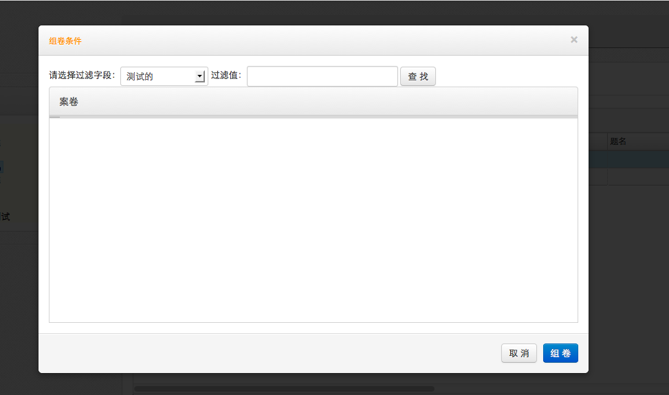
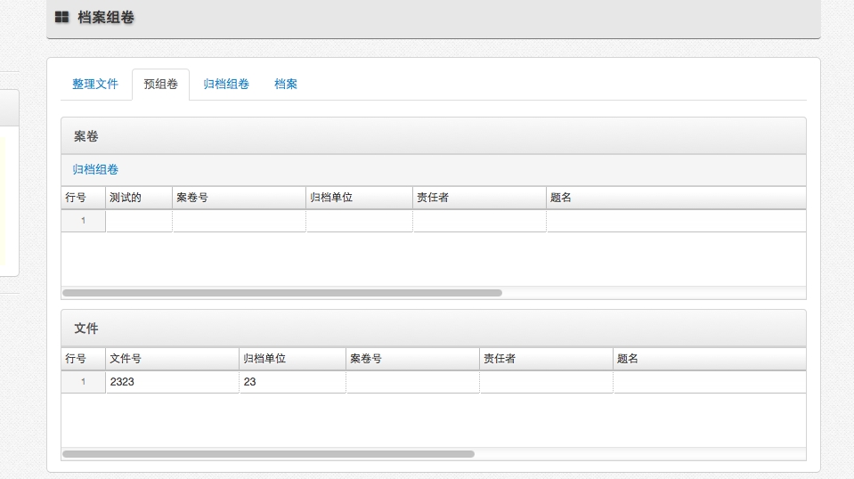

-
- 操作流程
- 点击首页功能菜单［档案管理－档案组卷］，打开档案组卷页面。
- 档案组卷包括［整理文件］、［预组卷］、［归档组卷］、［档案］功能。。
- 整理文件
- 可以在［整理文件］页签下，录入、修改、删除、挂接零散的档案数据。
- 整理完毕，选择需要组卷的零散文件，点击［组卷］，打开组卷。
-

-

- 如果零散文件要归档到已存在的案卷下，在打开的组卷框里，选择要查找的字段及字段值，选择查询出存在的案卷，点击“组卷”按钮，进入预归档页签。如果零散文件要归档到新案卷下，直接点击组卷按钮。
-

- 预归档是正式组卷前的临时状态，只有点击了“归档组卷”按钮，才是正式的组卷完毕。
- 在预归档对案卷进行编辑，点击“归档组卷”，将预归档的数据，正式组卷。
- 正式组卷，组卷数据移动到［归档组卷］页签下，此时可以正式归档到档案库，也可以拆卷回到零散文件。